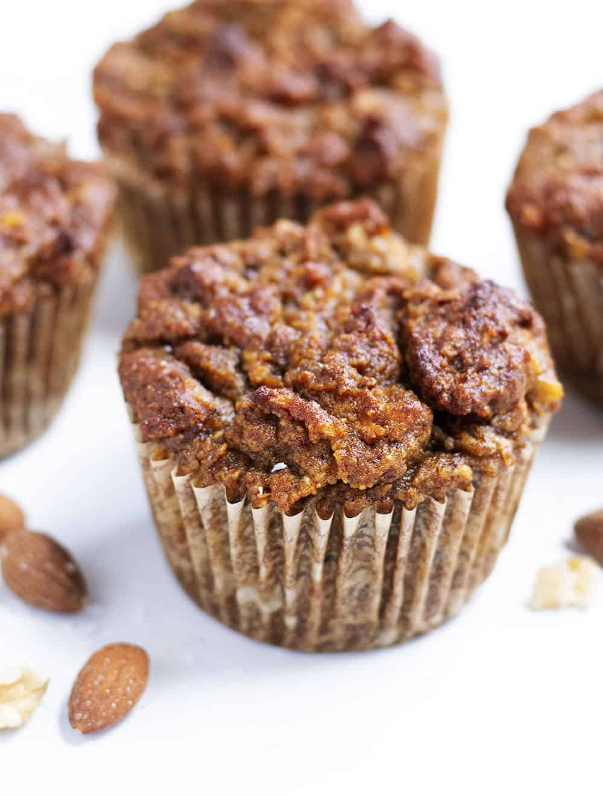

Almond Meal Flax Muffins
Return to Main Page

Gluten free, Easy to digest and Deeelicious
Ingredients
- 1 cup Almond Meal
- 2 cups Flax Meal
- 1 tbsp baking powder
- salt
- 1 tbsp cinnamon
- 3 eggs
- 1/8 cup coconut oil
- 1/2 cup milk, half and half or water- approximate
- 1 small banana, mashed - optional
- 1 cup frozen blueberries
- 1 tbsp vanilla
Steps
- Preheat oven to 350F
- Bring eggs to room temperature, melt coconut oil
- Add liquid ingredients, beat until smooth
- Add dry ingredients, adjust milk, water half and half to batter consistency
- Fold in 1 cup blueberries
- Fill muffin tins
- Add walnuts or chopped almonds on top of each muffin
- Bake at 350F for 25-30 minutes
Let cool for 15 minutes before enjoying!
Back To Top
Return to Main page